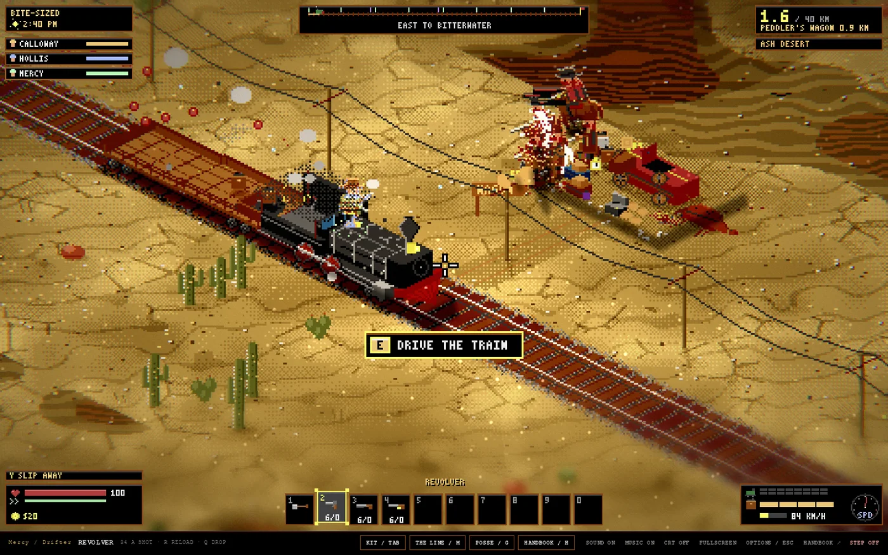
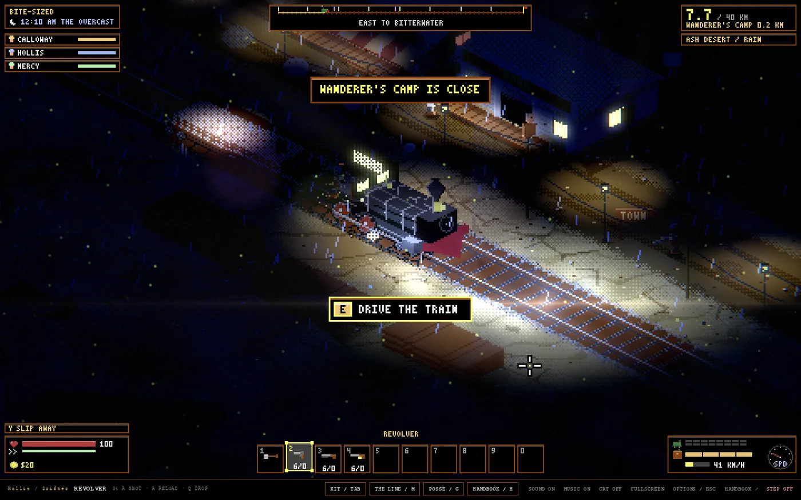
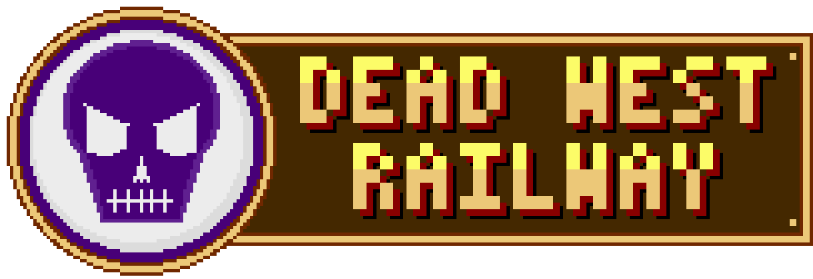

dotFound
A fast game launcher that finds every game on your PC, from Steam, GOG, Epic, Xbox and Battle.net to loose installers and portable folders, then puts them all on one shelf with real artwork.

I build apps, websites and games. I also love bringing old PC games back to life so they run properly on today's machines.
By day I'm a web engineer building WordPress sites and plugins. Everything else here is stuff I make because I want it to exist.
AppGameRestorationWebPick a box to jump to it.
Desktop apps and utilities, mostly built to scratch my own itch.
A fast game launcher that finds every game on your PC, from Steam, GOG, Epic, Xbox and Battle.net to loose installers and portable folders, then puts them all on one shelf with real artwork.
Internet radio player, now being rebuilt from scratch in Rust for Windows, macOS and Linux, with a full library view and a compact late-90s style player.
Python organizer for ROM collections: finds duplicates, prefers the right region and format, and sorts the rest.
A client-side invoice generator. Fill it in, print or save it, and nothing leaves your browser.
Snap a photo of an item while sourcing and get its sold count, active listings and a price to list it at.




A co-op survival game on a haunted frontier railroad for one to six players. Keep the boiler fed, scavenge supplies and look out for each other. Play online, over your own network, two to a screen with a controller, or alone offline.
Rooftop banana artillery inspired by QBasic Gorillas, rebuilt as an online multiplayer browser game with a 16-bit look. The server owns the physics and the match; the client draws it.
A terminal virtual pet. Cheese has moods, a diary, trust issues and a complicated relationship with bread. Tamagotchi by way of Seaman.
I grew up on these games and I want them to keep working. My current approach takes a game's original Windows or DOS code and rebuilds it as a native app, so it runs on a modern Mac without Wine, Rosetta or an emulator. You bring your own copy; none of the game is in my repos.


Building and maintaining websites is my day job, mostly WordPress sites, custom plugins and the hosting and DNS behind them. These are a few pieces I've open-sourced along the way.